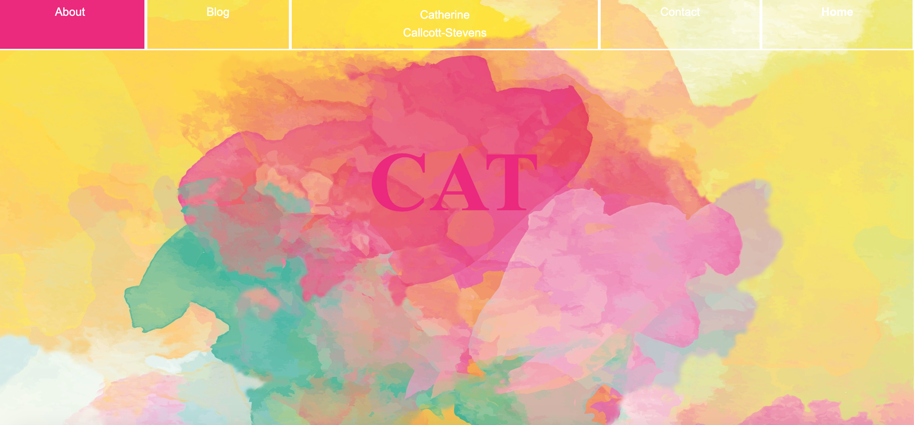
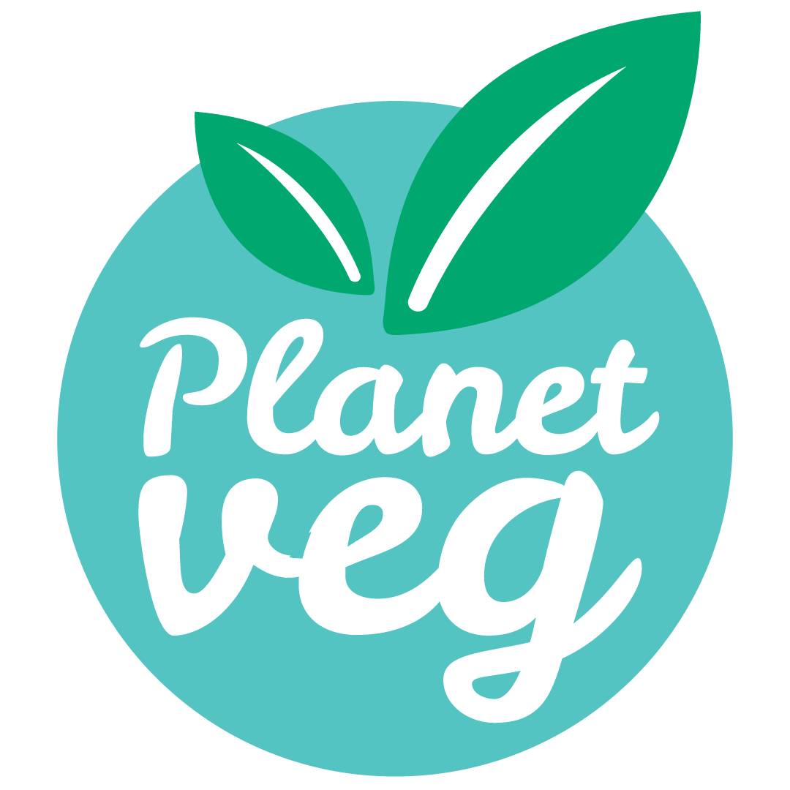

The Improbability Drive
Terminal application for Ruby assignment.

Portfolio
You might have seen this somewhere before?

Planetveg Website
Created a Squarespace site for my online retail startup Planetveg. Maintained and updated site, including all photography, copy and content.
Budget Gourmet
A little blog I created and run in my spare time.